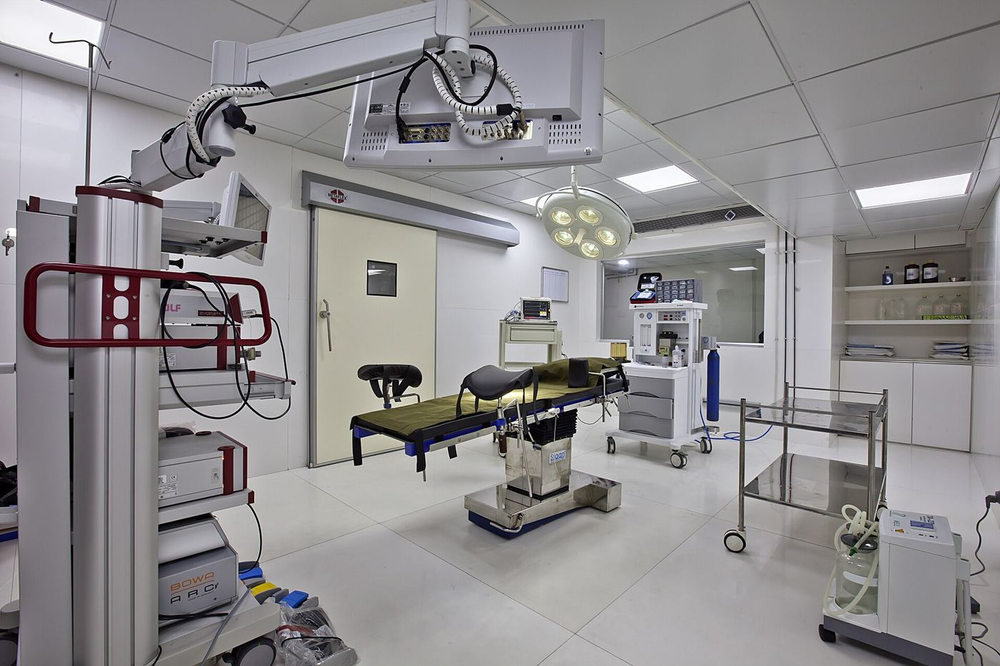
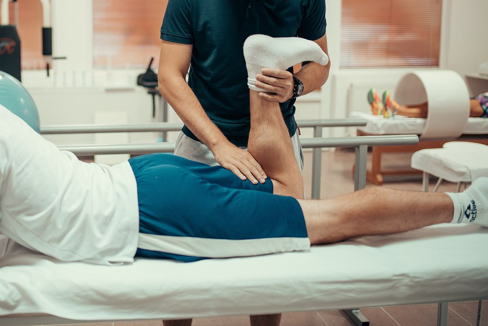
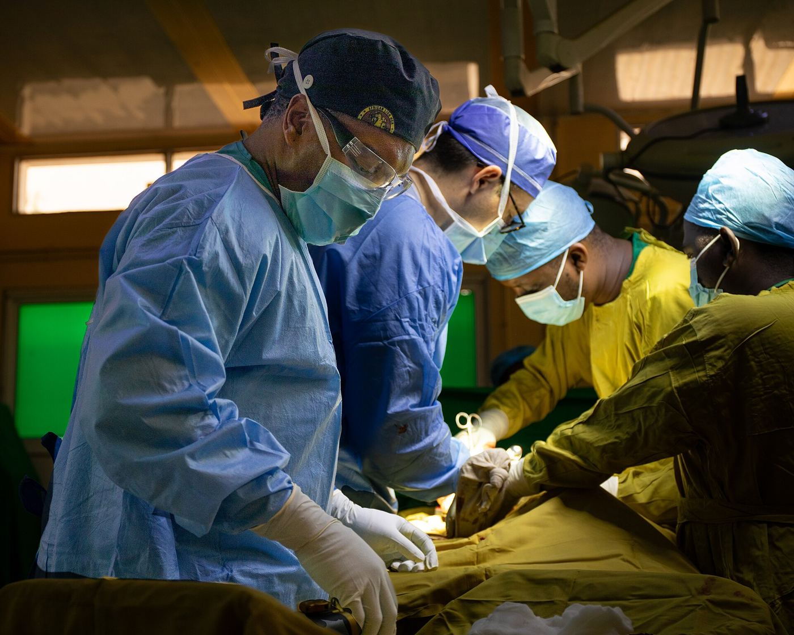
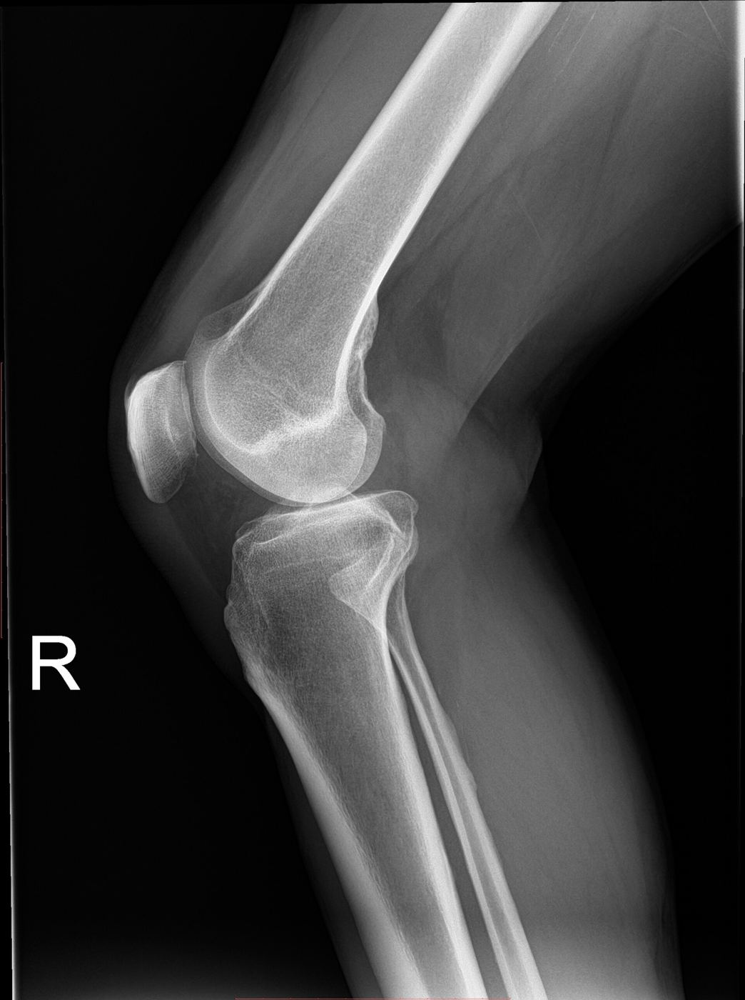
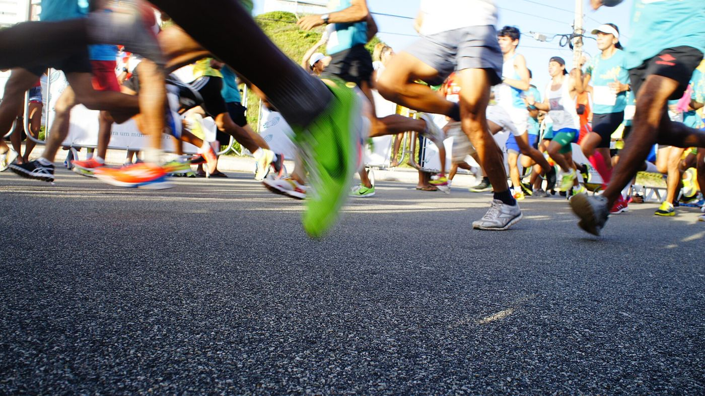
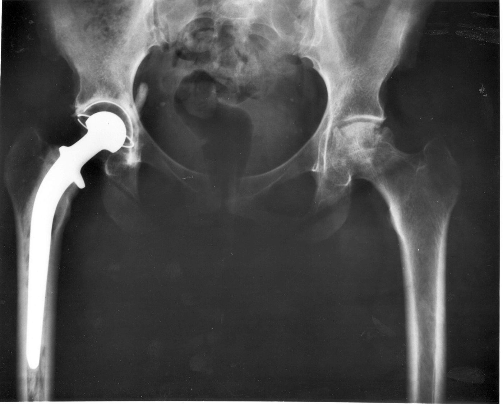
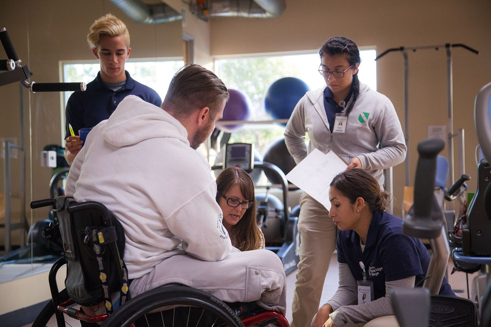
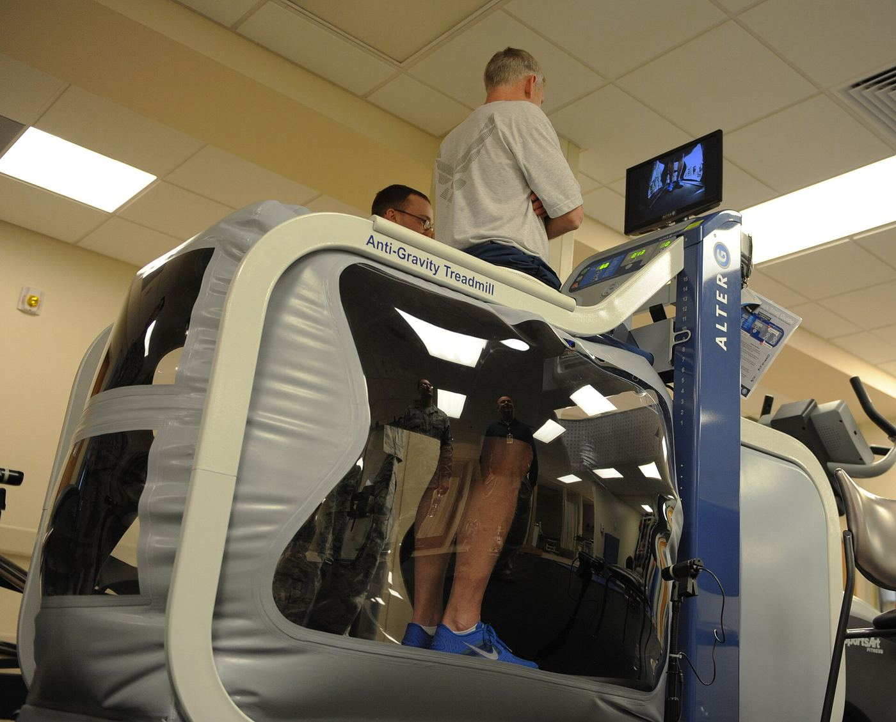

Ghutne, kulhe aur kamar ke dard ka vishwasniya ilaaj.
Dr. Aditya Soral is an AIIMS-trained orthopaedic surgeon with joint replacement experience in Australia, and a special interest in hip and knee disorders.
Specialist care for hips, knees and joints

Sample photo
Sample photoExpert care for hips and knees — with the time to explain every option to you and your family.
Dr. Soral trained in orthopaedic surgery at the All India Institute of Medical Sciences (AIIMS), New Delhi. His interest in joint replacement took him to Brisbane, Australia, where he worked with Dr. David Morgan.
Today, at Advaita Orthopaedics & Pain Management Centre, he focuses on disorders of the hip and knee, joint replacement surgery, and helping patients manage pain so they can stay active.
Orthopaedic surgery trainingAll India Institute of Medical Sciences, New Delhi
Joint replacement experienceWith Dr. David Morgan, Brisbane, Australia
Advaita OrthopaedicsAkad Marg, Shastri Nagar, Jaipur
From the first consultation for joint pain to a full joint replacement — under one experienced surgeon.

Sample photoDr. Soral's special interest — for advanced arthritis or joint damage where pain limits walking, sleep and daily life.

Early diagnosis & joint-saving treatment
Slip disc, sciatica, spondylosis

Ligament (ACL), meniscus and muscle injuries — and a safe plan to return to play.
Non-surgical relief for chronic pain

Bone injuries treated & followed up

Guided recovery after surgery or injury — strength, balance and confidence.
See common conditions Dr. Soral treats for each joint — then book or ask a question in one tap.
Answer 5 quick questions about your knee or hip pain to see if it's time to consult a specialist.
A clear, step-by-step approach — so you always know what comes next.
Talk through your symptoms, history and daily difficulties.
Examination and X-ray / MRI review to find the exact cause.
Medicines, physiotherapy or surgery — options explained clearly.
Follow-ups and rehab guidance until you're back on your feet.
A typical journey after knee replacement. Every patient is different — Dr. Soral will plan yours.

Sample photoGeneral information only. Timelines vary with age, health and the type of surgery.
Sample images — to be replaced with real photos of the clinic.
Simple, trustworthy reading for patients and families.
Patients and families travel to Shastri Nagar for specialist hip and knee care. Plan your visit with a quick WhatsApp message.
Can't find your answer? Ask our assistant or message the clinic.
Our assistant answers common questions instantly — in English or Hinglish.
No. Many knee problems improve with medicines, physiotherapy, weight management and lifestyle changes. Surgery is discussed only when these are not enough and the joint is badly damaged.
If pain limits walking, disturbs your sleep and does not improve with other treatment — and X-rays show advanced joint damage — replacement may be an option. Dr. Soral will assess your case in person.
Previous X-rays, MRI or CT reports, prescriptions, and a list of medicines you take. Wear loose clothing so the joint can be examined easily.
Please ask the clinic about insurance and cashless options for your policy. (Clinic to confirm details.)
The evening OPD starts at 4:30 PM. Please call or WhatsApp before visiting to confirm the day's timings.
Pick a day and time — your request opens in WhatsApp, ready to send.
Choose a day Preferred time Patient detailsThe clinic will confirm your appointment time.
Advaita Orthopaedics & Pain Management Centre
AddressAkad Marg, Shastri Nagar, Jaipur, Rajasthan 302046
TimingsEvening OPD from 4:30 PM · call to confirm
Phone / WhatsApp097993 81818